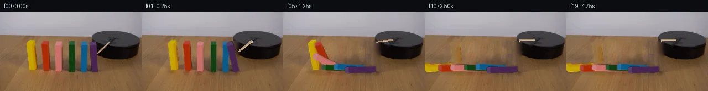

![首帧]()

Round 00
2026-11-05T15:22:34.860556+00:00像素候选变化代码 +275/−0inspection 更新
pixels 08a50861c621826a · code f5200c39d3092a30
查看本轮 generate.py 真实 diff
--- previous/generate.py
+++ current/generate.py
@@ -0,0 +1,275 @@
+"""PixelWorld case_0035: rotating wooden stick knocks over six colored blocks.
+
+Local pixel synthesis only. Frame 0 is the untouched first_frame.png. Later
+frames: inpainted static plate + rotated original-crop block sprites (domino
+physics about measured base pivots) + redrawn rotating stick.
+"""
+from pathlib import Path
+import numpy as np
+from PIL import Image, ImageDraw, ImageFilter
+import scipy.ndimage as ndi
+from artifact_io import save as save_artifacts
+
+ROOT = Path(__file__).parent
+TMP = ROOT / '.tmp'
+TMP.mkdir(exist_ok=True)
+
+# ---------------------------------------------------------------- measurements
+# blocks left->right: yellow, red, pink, green, blue, purple
+NAMES = ['yellow', 'red', 'pink', 'green', 'blue', 'purple']
+PIV_X = [53, 79, 101, 125, 146, 167] # left-bottom edge x
+BASE_Y = [106, 107, 108, 108, 108, 109] # pivot y (table contact)
+WIDTH = [11, 10, 10, 10, 11, 10]
+HEIGHT = [55, 55, 55, 54, 54, 56]
+# HSV segmentation windows used in OBSERVATION.md
+ZONES = [(44, 72, 40, 72, 0.45, 0.50),
+ (73, 97, 340, 18, 0.45, 0.40),
+ (98, 121, 330, 12, 0.14, 0.55),
+ (122, 142, 95, 160, 0.40, 0.18),
+ (143, 160, 185, 222, 0.40, 0.35),
+ (161, 178, 255, 305, 0.25, 0.15)]
+
+HUB = (203.5, 51.0)
+PHI0 = np.deg2rad(139.5) # initial stick screen angle (atan2, +y down)
+STICK_LEN = 36.0
+DISK_C, DISK_A, DISK_B = (208.0, 65.0), 48.0, 33.0
+
+FPS, NFRAMES = 4, 20
+
+# ----------------------------------------------------------------- load source
+src = np.array(Image.open(ROOT / 'first_frame.png').convert('RGB'))
+H, W, _ = src.shape
+assert (H, W) == (144, 256)
+
+fsrc = src.astype(np.float32) / 255
+r, g, b = fsrc[..., 0], fsrc[..., 1], fsrc[..., 2]
+mx = fsrc.max(-1); mn = fsrc.min(-1)
+v = mx
+s = np.where(mx > 0, (mx - mn) / np.maximum(mx, 1e-6), 0)
+hue = np.zeros_like(mx)
+d = mx - mn
+mm = d > 1e-6
+ix = (mx == r) & mm; hue[ix] = ((g - b)[ix] / d[ix]) % 6
+ix = (mx == g) & mm; hue[ix] = ((b - r)[ix] / d[ix]) + 2
+ix = (mx == b) & mm; hue[ix] = ((r - g)[ix] / d[ix]) + 4
+hue *= 60
+
+block_masks = []
+for (x0, x1, h0, h1, st, vt) in ZONES:
+ hm = ((hue >= h0) | (hue <= h1)) if h0 > h1 else ((hue >= h0) & (hue <= h1))
+ m = hm & (s > st) & (v > vt)
+ m[:, :x0] = False; m[:, x1 + 1:] = False; m[:46, :] = False
+ lab, _ = ndi.label(m)
+ sizes = np.bincount(lab.ravel()); sizes[0] = 0
+ m = lab == sizes.argmax()
+ m = ndi.binary_fill_holes(m)
+ block_masks.append(m)
+blocks_union = np.any(block_masks, axis=0)
+
+# stick: warm light wood pixels along the measured shaft
+stick = np.zeros((H, W), bool)
+stick[42:90, 166:214] = True
+R, G, B = src[..., 0].astype(int), src[..., 1].astype(int), src[..., 2].astype(int)
+stick &= (R > 120) & (R < 235) & (G > 95) & (G < 205) & (B > 60) & (B < 175) \
+ & (R > B + 25) & (G > B + 10)
+
+# ------------------------------------------------------------- static inpaint
+erase_body = ndi.binary_dilation(blocks_union, iterations=2)
+erase_stick = ndi.binary_dilation(stick, iterations=2)
+erase = erase_body | erase_stick
+
+def disk_rho(x, y):
+ return np.sqrt(((x - DISK_C[0]) / DISK_A) ** 2 + ((y - DISK_C[1]) / DISK_B) ** 2)
+
+yy, xx = np.mgrid[0:H, 0:W]
+on_disk = disk_rho(xx, yy) < 0.97
+
+# seed erased pixels with nearest clean pixel, then diffuse inside the mask
… diff truncated; 188 more lines …